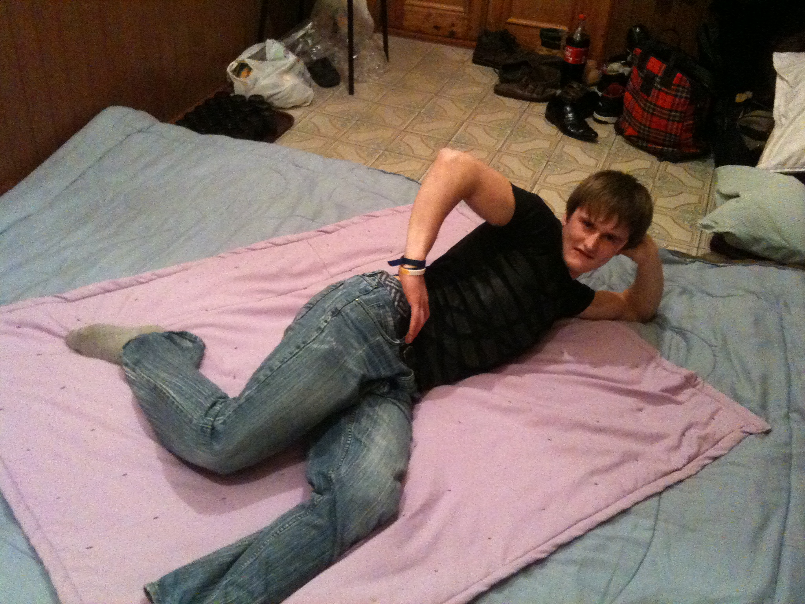
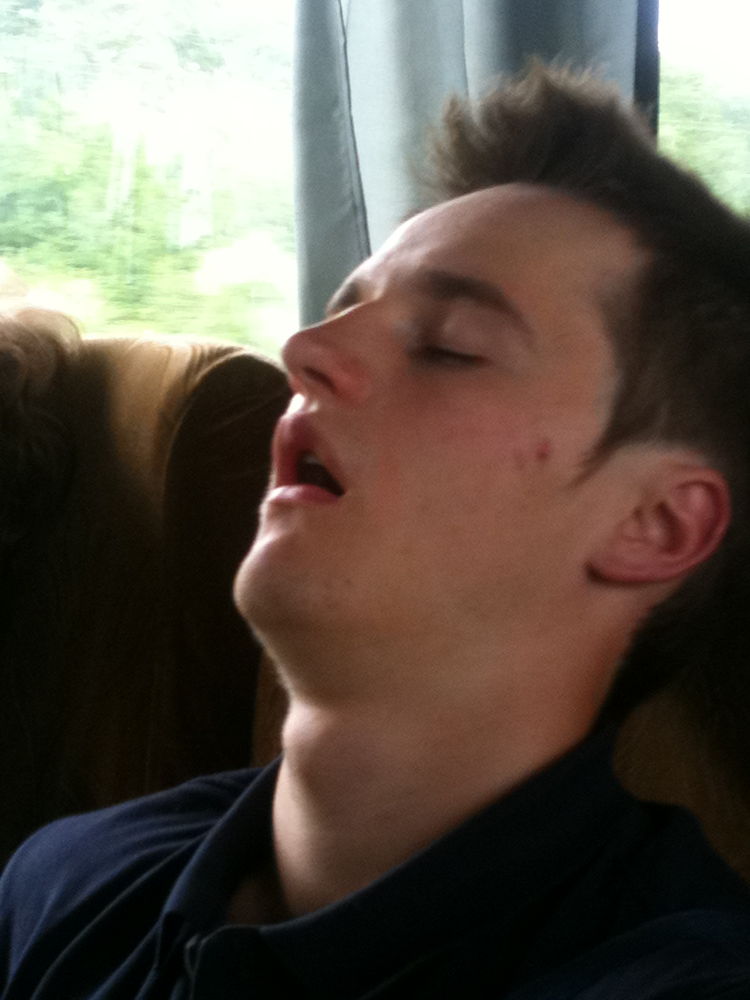
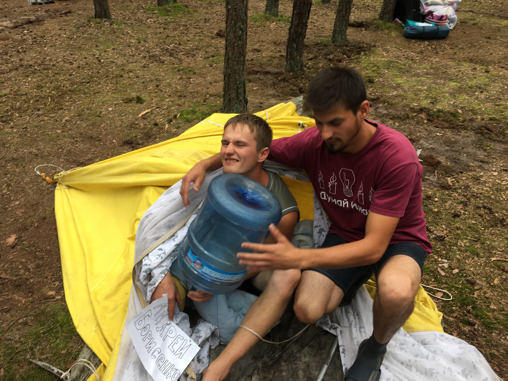
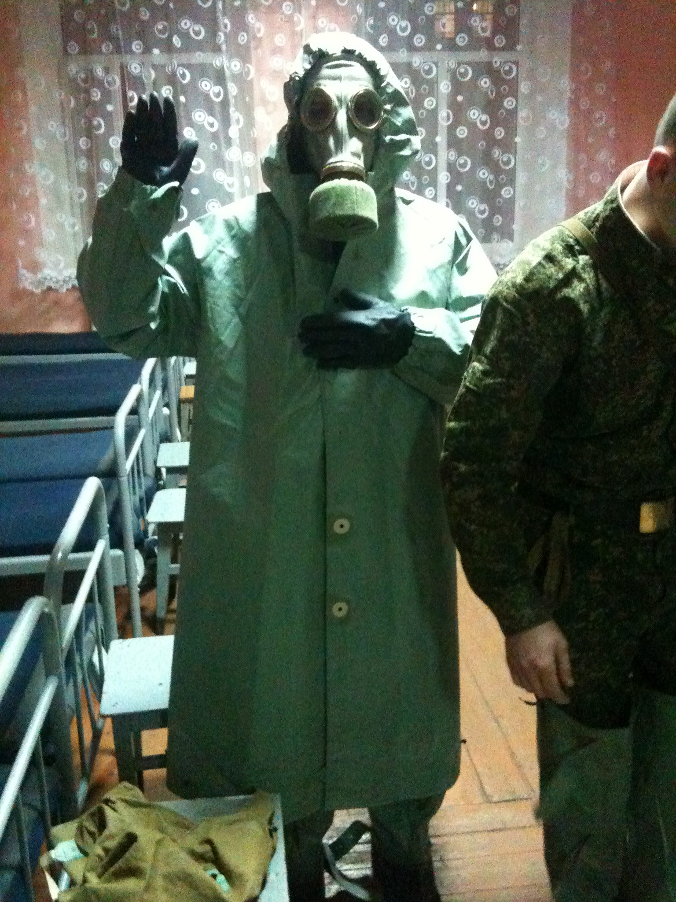

Мои работы
-
Выкинул мусор
Вчера после обеда я вынес целую торбу мусора, на котором спал уже пару недель из-за лени
-
 Сходил в туалет
Сходил в туалет
Сегодня очень захотелось по большому, хотя уже пару дней ничего не ел
-

Лежал
Это моё любимое занятие, обычно лежу для того чтобы сохранить энергию, лень вставать есть
-

Ковырял в носу
Долго этого не делал, потому собрались огромные залежи козявок и густая растительность
-

Выживал
Пытался выжить в лесу с кочевниками
-

Готовился к аппокалипсису
Украл старый резиновый костюм, пару лет жил в лесу